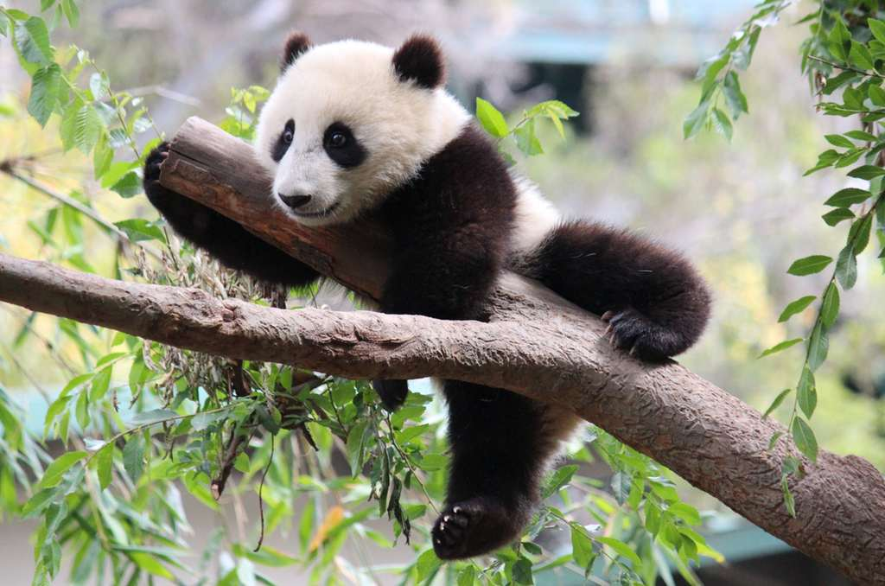

Giant pandas have an insatiable hankering for bamboo, but scientists have long wondered how the bears survive on such a fibrous and low-nutrient plant. Now, a new study finds that giant pandas have clever ways to conserve energy, including having lazy lifestyles, small organs and special genes.
The researchers followed five captive and three wild giant pandas (Ailuropoda melanoleuca) for about a year. By using GPS trackers and analyzing chemicals excreted in the pandas' poop, they were able to measure the amount of energy the pandas spent each day. Surprisingly, the pandas expended only about 38 percent of the energy that an animal with the same body mass would require.
"We thought the metabolism of the panda would be low because the bamboo diet contains low energy," said senior author Fuwen Wei, a professor of zoology at the Chinese Academy of Sciences in Beijing. "But it is very surprising that it is this exceptionally low, equal to the three-toed sloth, and much lower than the koala.

The only known mammals that have a lower daily energy usage than the giant panda are the Australian rock rat (Zyzomys argurus), which spends 21 percent of its expected energy per day, and the golden mole (Eremitalpa namibensis), which spends 26 percent of its expected energy per day, the researchers wrote in the study.